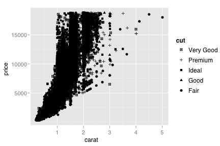
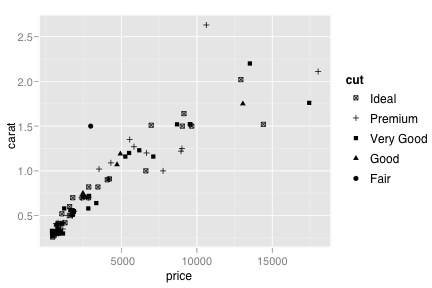
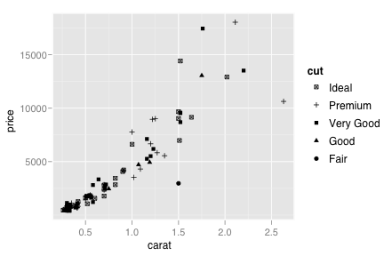

scale_shape
Discrete position scale
Details
Examples
> dsmall <- diamonds[sample(nrow(diamonds), 100), ] > > (d <- qplot(carat, price, data=diamonds, shape=cut))  > d + scale_shape(solid = TRUE) # the default > d + scale_shape(solid = FALSE) > d + scale_shape(name="Cut of diamond") > d + scale_shape(name="Cut of\ndiamond") > > # To change order of levels, change order of > # underlying factor > levels(dsmall$cut) <- c("Fair", "Good", "Very Good", "Premium", "Ideal") > > # Need to recreate plot to pick up new data > qplot(price, carat, data=dsmall, shape=cut)  > > # Or for short: > d %+% dsmall  src "\n"